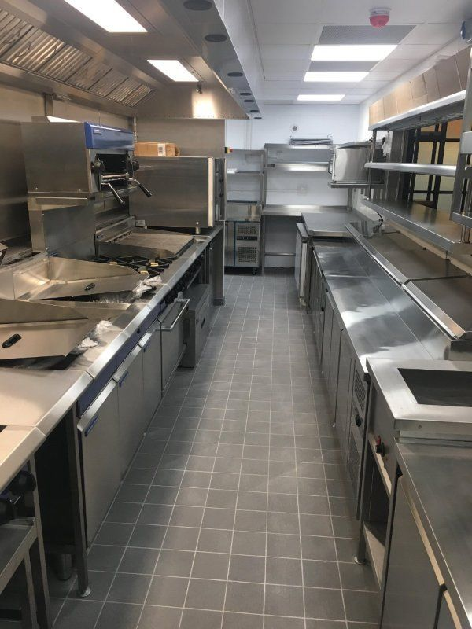

AISI 304 & 316L TIG/MIG Welding · CAC RC 8909233
Hygienic Stainless Steel Fabrication for Food, Pharma & Industry
Precision-welded stainless steel tanks, processing silos, commercial kitchen equipment, abattoir fit-outs, and cold room shelving fabricated to sanitary standards in Lagos.

Custom Stainless Steel Engineering
Fabricated In-House at Olota Junction, Abule Egba
We cut, form, TIG/MIG weld, and sanitary-polish heavy-gauge stainless steel equipment built for continuous commercial and industrial service.
01
Tanks, Vessels & Silos
Vertical and horizontal mixing tanks, jacketed cooling vessels, insulated water reservoirs, and bulk grain/powder silos in AISI 304 or 316L.
02
Cold Room Shelving & Abattoir Fit-Outs
Slotted and solid Grade 304 cold room racking, overhead meat rails, evisceration tables, and wash troughs engineered for high-moisture washdowns.
03
Commercial Kitchens & Process Piping
Custom extraction hoods, stainless worktables, sinks, drainage channels, and sanitary process pipework for hotels, QSRs, and factories.